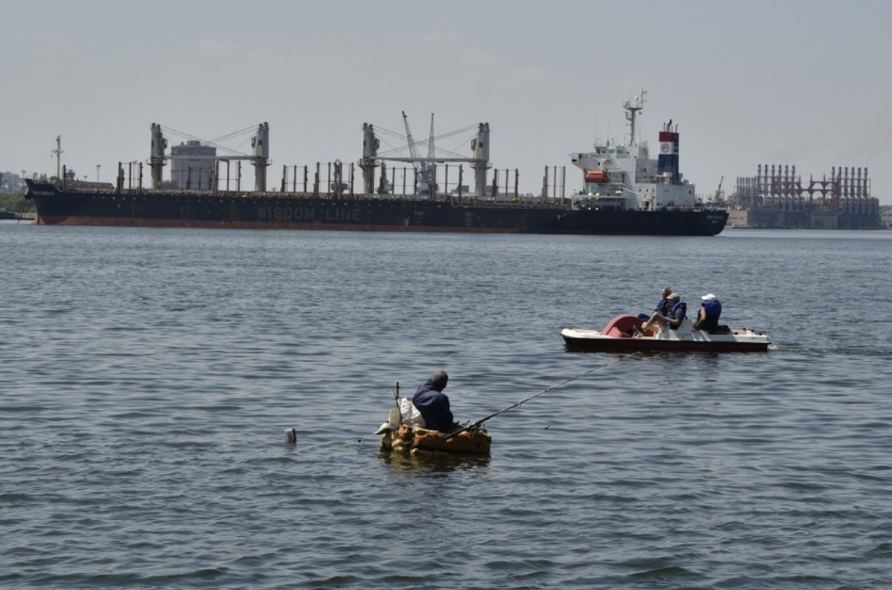
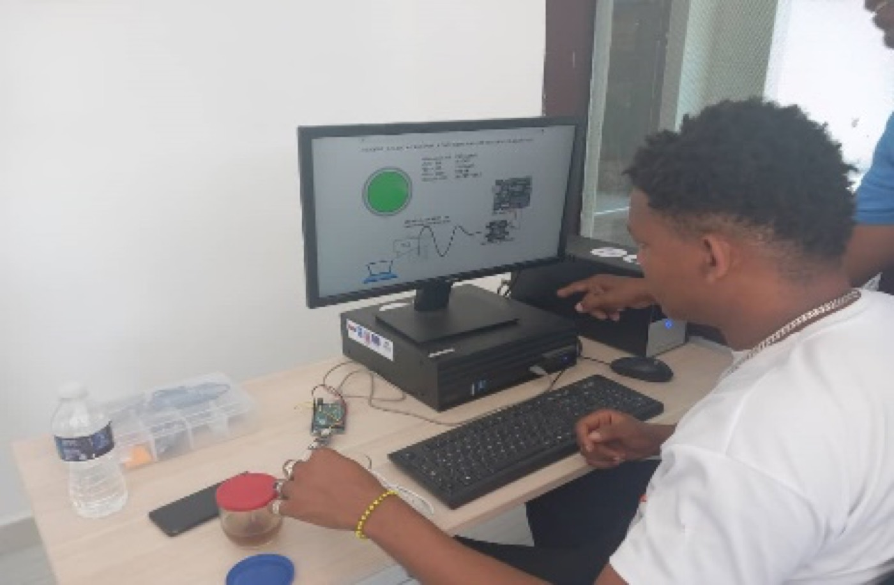

CubanWaterLab
ESENFR
CubanWaterLab
ESENFR
CubanWaterLab
ESENFR
CubanWaterLab
ESENFR
Le volet sciences sociales de CubanWaterLab travaille avec la communauté de Casablanca — pêcheurs, élèves, autorités locales — pour que la technologie réponde à des besoins réels, et pas seulement à des questions de laboratoire.

« C'est la première fois qu'un projet les implique directement. »
Pêcheurs de la base de pêche récréative de Casablanca, rencontre avril–juin 2025« Ils jugent important de disposer d'une nouvelle technologie leur permettant de connaître les paramètres de l'eau de la baie… en matière de pollution, ils soulignent le besoin de connaître le degré de contamination par le pétrole. »
Rapport trimestriel, avril–juin 2025« Ils suggèrent de placer les bouées près d'un endroit où ils peuvent les surveiller. »
Avis recueillis lors de la première rencontre avec les pêcheurs

En s'appuyant sur le diagnostic environnemental et culturel de Casablanca (2024) et sur 87 enquêtes propres, l'équipe de sciences sociales travaille avec deux groupes de discussion — pêcheurs accrédités et élèves du secondaire — et collabore avec le Conseil populaire de la communauté pour concevoir des ateliers Carte verte et des actions de science citoyenne.
Entre juillet et septembre 2026, les enquêtes se sont poursuivies avec le soutien de la présidente du Conseil populaire de Casablanca, la validation de l’instrument qui sera utilisé dans la communauté a été coordonnée avec le laboratoire du Cimab et une réunion méthodologique a exploré des scénarios de travail dans le paradigme de la science citoyenne. La thèse de la doctorante en sciences sociales s’organise en trois articles, avec la communauté de Casablanca comme noyau empirique.